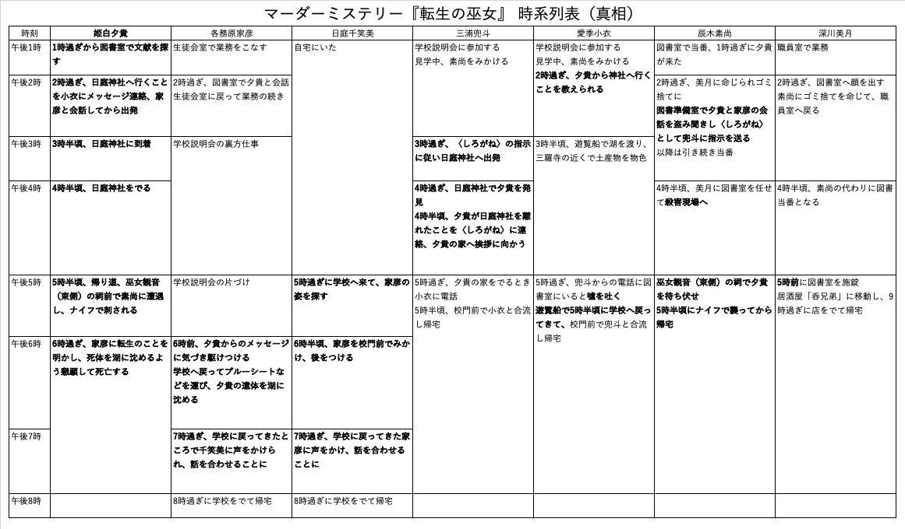

秘密カードを手にした弟の顔に困惑の色が浮かぶのを家彦は見守っていた。
（当たり、か）
壺のシルエットが描かれたカードにどんな意味があるのか、家彦は漠然と予想していた。素尚の表情の変化はそれを裏づけるものだった。
喜んでばかりもいられない。いま、自分は追い詰められている。このゲームの本質を見極めるのが遅すぎたとしか言いようがない。
万慈が「では七周目に入りましょう」と声をあげる。ほぼ同時に家彦は宣言した。
「俺も〈秘密の決断〉だ」
扇のシルエットが描かれたカードの裏面に家彦は視線を走らせた。
秘密カード〈家宝の扇〉
これは三浦家に古くから伝わる家宝の扇である。「しがもりのしろがねのとわのねむりやあらんことを」と綴られているが、どんな意味があるのか誰も知らない。
［このカードをゲームマスターが所持しているとき（初期状態）］
犯人に協力したことを兜斗が打ち明けたなら、ゲームマスターはこのカードを兜斗に「あなたは思いだしました」と言って渡す。
［このカードを任意のプレイヤーが所持しているとき］
自分の手番で〈秘密の決断〉として次のどちらかを実行できる。
プレイヤーを一人選んで「あなたに託す」と告げ、このカードを渡す。
あるいは、扇に綴られた文句を告げる。相手に意図が伝わらなければ、なにも起こらずカードは手元に残る。意図が伝われば、なにかが起こる。
なにが起こるのか今はもう明白だ。「日庭さん」隣の女性に声をかける。
「しがもりのしろがねのとわのねむりやあらんことを」
帰宅した主人を迎える犬のように千笑美が微笑んだ。
「ご武運を」
千笑美が差しだしたのは、剣のシルエットが描かれたカードだった。
秘密カード〈神殺しの剣〉
これは日庭家に古くから伝わる、神の怒りを鎮め、永い眠りに就かせるための剣である。日庭家の者はこの剣を使うことができない。合い言葉を知る者に託さなければならない。
［このカードをゲームマスターが所持しているとき（初期状態）］
家彦が、死に際の夕貴が生まれ変わりの巫女に関する伝承に言及したことを打ち明けたなら、ゲームマスターはこのカードを千笑美に「あなたは思いだしました」と言って渡す。
［このカードを千笑美が所持しているとき］
他のプレイヤーに〈秘密の決断〉として「しがもりのしろがねのとわのねむりやあらんことを」と告げられ、そのプレイヤーを信頼できるなら「ご武運を」と告げてカードを渡す。信頼しないプレイヤーには知らぬふりをして渡さないで良い。
［千笑美以外のプレイヤーが所持しているとき］
自分の手番で〈秘密の決断〉として次のことを実行できる。
神と思われるプレイヤーにこのカードを突きつけ「鎮まりたまえ」と告げる。
相手が神でなければ、なにも起こらずカードは手元に残る。
相手が神ならば封印することができる。これでゲームは終了となる。
文章に目を通した家彦は、皮肉な笑みを抑えることができなかった。
（神ときたか）
これは文字どおりの神なのか。それとも狂信的な、自身をしろがねさまの化身だとか御遣いの類だと信じる者を意味するのか。今はそこまではわからない。
（さて、どうする）
家彦の予想どおりなら、今は劣勢だ。この七周目で決着がつく。正直、敗北を免れる自信はない。それ自体は構わない。しょせんはゲーム、やれることをやるだけだ。
だが、弟のことは別だ。絶対に守らなければならない。正直なところ、万慈のたくらみを読み切れているのか自信はない。これが本当に万慈の狙いだとすれば、あいつは正真正銘のアホとしか言いようがない。
（だが、そのアホに）
俺はすでに負けているのかもしれない。
家彦と千笑美が秘密カードをやりとりする光景が、素尚にはどこか遠い出来事のように思えていた。どうしても目が、手元のカードへ惹かれてしまう。そこにある文章をもう一度確かめたくなってしまう。
神？ 生まれ変わりの巫女？ 天誅？ 巫女を殺してゲーム終了？
このゲームはマーダーミステリーのはずだった。ついさっきまで推理小説のようにゲームは進行していた。それが突然、ファンタジーに変じてしまった。
（落ち着け）
ひとつひとつ、ゆっくり考えろ。言葉の意味を把握するんだ。
美月は「よきにはからえ」という言葉とともに、この秘密カードを渡してきた。「神」とは美月を指すとしか思えない。では「生まれ変わりの巫女」は誰なのか。
――こころちゃんが転生の巫女なの？
脳裏を過ぎったのは美月の言葉だった。思えば、これまでずっと役に徹して小衣のことを「愛季さん」と呼んでいた美月が、あのときだけ「こころちゃん」と呼びかけた。
あれは小衣の不意を突くためではなかったか。美月が本当に確認したかったのは小衣が夕貴と血の繋がりがあることではなかった。小衣こそが文字どおり「転生の巫女」ではないかと疑っていた。それを確かめるためにあんな訊き方をしたのではないか。
（仮にそうだとして）
それじゃあ、転生の巫女ってなに？
「あの、次は私ですけど、どうしましょう」
とまどいの表情を顔に浮かべた千笑美が、家彦のほうを向いて言った。
「まあ〈雑談〉するしかないな」
家彦がそう応じるのは当然だった。手掛かりカードはすべてめくられ、全員が〈詰問〉で告白を終えて犯人は素尚だったと明らかになっている。千笑美が獲得した秘密カードは家彦に渡った。採れるアクションは〈雑談〉しかない。
「そういえばパスしてもいいってルールに書いてありましたね」
「パスするだけってのはもったいないな。なにか話そう。たとえば、そもそもこのゲーム、どうすれば終わるのか」
「えっと、秘密カードの内容は話しちゃいけないんですよね」
「まあな。ただ、この場で共有されている情報から自分の考えを述べるのは別にルール違反じゃないだろう。実を言うと、さっき辰木くんに〈詰問〉されたとき、打ち明けられなかったことがある。すまない、あまりにも信じがたい内容だけに話せなかったんだが、事情が変わった。いま話してもいいか？」
無言で千笑美が頷いた。遅れて素尚も首を縦にふる。
「死んだ後は湖に沈めてほしいと夕貴に頼まれたのは本当だ。その理由が、遺体が光らないことを知られたくなかったというのもな。ただし、それは本質的な理由ではなかったんだ。辰木くん、あのときはごまかしてしまって、すまなかった」
素尚の目をみつめて家彦は頭を下げた。「いえ」素尚はそう応じるしかなかった。
「夕貴が隠したかったこと、それは本物が――生まれ変わりの巫女が他にいることだ」
家彦はテーブルの上を、文献の手掛かりカードが置かれているあたりをみつめていた。
「それが誰のことなのか、夕貴は言い残さなかった。瀕死の状態だったからな、言葉はとぎれとぎれだった。まとめるとこういうことだ。夕貴は姫白家の、本物の巫女じゃない。だから命を失っても遺体が光ることはない。それを知られると本物の巫女のほうが命を狙われる。それだけは避けたいから、死んだ後は湖に沈めてほしいと」
全員が意味を理解するのを待つかのように家彦は言葉を切り、やがて口を開いた。
「知ってのとおり、夕貴は姫白家の巫女だ。そんなことは紫ヶ森に住んでいる誰だって知っている。さっぱり意味がわからず混乱した。だが、今ならわかる。夕貴が言いたかったのは神職としての巫女じゃない。生まれ変わりの巫女だ。自分が生まれる前の記憶があり、姫白家の娘として何度も生まれてきては、若くして命を落とす運命が待ち受けている娘だ。夕貴は巫女ではあったが、生まれ変わりの巫女ではなかった。いや、こう言ったほうが正確だ。夕貴はずっと姫白家の巫女として注目を浴びることで、自分こそ生まれ変わりの巫女だと何者かに信じこませてきた。それじゃあ、本物は誰だ？」
顔を上げた家彦が視線を、まっすぐ小衣へと向けた。
「さっきの〈詰問〉でのやりとりを思いだしてくれれば、みんなわかっただろう。さあ、次に考えるべきことは決まってるよな。夕貴を殺した、真の犯人は誰なんだ？」
素尚の脳裏を、文献の手掛かりカードに書かれた記述が過ぎった。龍神、産土神、しろがねさま。姫白家の娘は若くして病で、あるいは家族や身近な者に襲われて命を落とす。
「辰木くんが犯人なのは確かだ。夕貴をナイフで刺した実行犯は間違いなく辰木くんだろう。だが、そうさせるよう仕向けた奴がいる。ひとまず、そいつのことを『黒幕』と呼ぶことにしよう。具体的にどうやって黒幕が素尚をそそのかしたのかはわからない。弱みを握って脅したのかもしれない。いや、夕貴が生まれ変わりの巫女を信じていたことを思えば、なにか超常的な力で人の心を操る存在が現実にいるのかもしれない。それこそ神のようにな。そいつは今、この瞬間にも生まれ変わりの巫女の命を狙っている」
後者こそ正解だと素尚は知っていた。この手にある〈呪殺の毒壺〉がその力だ。しろがねさまはこれまで何度もこの力を使って巫女の家族や友人たちを操り、命を奪うことを何百年もくりかえしてきたのだろう。
「このゲームはどうやって終わるのか」
テーブルを囲む顔を家彦はひとつひとつ見渡していく。
「決着が着いたときだ。生まれ変わりの巫女と、黒幕との勝負がな。どちらか先に相手を倒したほうが勝利する」
意味ありげに家彦は、剣のシルエットが描かれたカードを掲げた。ルール上、秘密カードの内容を家彦は口にすることができない。だが、なにをわからせようとしているのか素尚には理解できた。剣のカードを神に、美月に突きつければ、このゲームは終わる。
「辰木くん」カードをテーブルに伏せた家彦が、素尚に呼びかけた。
「君はどう思う」
どうって。そう問い返そうとしたが、素尚は声をだせなかった。ひどく喉が渇いている。
「どちらが勝つべきだと思う」
「それは、もちろん」
フラッシュのようにいくつかの言葉が明滅した。「辰木素尚」は答えた。
「生まれ変わりの巫女です。僕は騙されていたようです。姫白先輩を本当に嫌っていたわけじゃありません。僕は間違っていました。先輩を殺してしまったこと、今は後悔しています。あんなこと、するべきじゃなかった。人として許されないことでした」
これは誰が話しているのだろう。せわしなく口を動かしながら素尚はぼんやりと思った。
「あれは本当の僕じゃなかったんです」
陰に潜んでいたもう一人の自分が、音もなく自分と入れ替わっていく。
（兄さんは、）
素尚は理解した。家彦は間に合わなかった。
（負けるんだ）
次の手番が来れば、家彦は剣のカードで美月を倒すだろう。だが、その前に素尚の手番がある。美月から〈呪殺の毒壺〉を託された素尚が、先に小衣を殺すことができる。
（僕が、兄さんを負かすんだ）
家彦が千笑美の〈雑談〉を強引に利用し、長々と話してきたのはなんのことはない、ただの命乞いだ。もはや家彦は、弟を説得するくらいしか他に打つ手がない。
（まさか、これが万慈さんの罠？）
犯人役をあてがうことで動揺させるだけではなかった。いま、再び素尚に人を殺すのか選択を与えようとしている。
（くだらない）
小学生じゃあるまいし、たかがお遊びの中で敵を倒すことを躊躇なんかするものか。
「俺も〈雑談〉で」家彦に合図され、手番を受けとった兜斗が言った。
「謝らせてくれ。すまなかった」
小衣に向かって、兜斗は頭を下げた。小衣は当惑した顔をしている。
「各務原先輩の話で腑に落ちた。黒幕に知られれば命を狙われる。だから姫白先輩との仲は隠すしかなかったんだな」
いえいえ、こちらこそどうもどうも。あたふたと小衣は頭を下げ返した。
「それと辰木先輩」兜斗が素尚へ声をかけた。
「俺も姫白先輩には複雑な思いを抱いていた。扇を各務原先輩に渡したのは、俺にその資格はないと思ったからだ」
冬の夜に外出し、吸った息の新鮮さに驚くような感慨を素尚は抱いた。これまでゲーム上の駆け引きで息が詰まる思いをしてきた。兜斗はただ一心に、きわめて真面目に、キャラクターとしての「三浦兜斗」はなにを思うのか想像していた。
「なにを選ぶかは先輩の自由だ。各務原先輩はああ言っていたが、もっと気楽で良い」
大丈夫、僕は子供じゃありません。そんな言葉が素尚の頭に浮かんだが、口にはしなかった。ただ曖昧にお追従の笑みを浮かべた。
「それじゃあボクは〈秘密の決断〉で」兜斗に目で合図された小衣が言った。
「いまこそあがないのとき」
一枚のカードを素尚に向かって突きだす。割れた壺のシルエットが描かれていた。
すっかり忘れていた。素尚こそ犯人だと暴いた小衣が、その後で万慈に渡された秘密カードだ。小衣からカードを受けとり、素尚はそれを裏返した。
秘密カード〈まっすぐな心〉
衆目の前で罪を暴かれた犯人は、人の道に背いたことを心の底から悔い、まっすぐな心を手に入れた。いまなら呪いを打ち砕き、それを神へ返すことができる。
［このカードをゲームマスターが所持しているとき（初期状態）］
犯人は誰なのか〈嘘吐きへの詰問〉によって解き明かしたプレイヤーに、ゲームマスターはこのカードを「あなたの言葉は届いた」と告げて渡す。
［犯人を指摘したプレイヤーが所持しているとき］
自分の手番で〈秘密の決断〉として犯人に「いまこそあがないのとき」と告げて、このカードを渡す。
［このカードを犯人が所持しているとき］
自分の手番で〈秘密の決断〉として次のことを実行できる。
神と思われるプレイヤーにこのカードを突きつけ「我は人なり」と告げる。
相手が神でなければ、なにも起こらずカードは犯人の手元に残る。
相手が神ならば封印することができる。これでゲームは終了となる。
なお、犯人がすでに秘密カード〈呪殺の毒壺〉を手にしている場合、自分の手番が来たとき必ず〈呪殺の毒壺〉あるいは〈まっすぐな心〉のどちらかを使わなければならない。
カードの文面から、素尚は顔を上げた。
家彦が緊張したまなざしで素尚をみつめている。千笑美は状況をわかっているのかいないのか、ぼんやりした顔だ。兜斗はいつもの無表情。小衣がニコニコと微笑んでいる。
隣へ視線を移す。見知らぬ女がいた。もちろん、いまさら知らない人物がこの室内に出没するわけがない。そこにいるのは深川美月だった。だが、素尚の知る美月のどんな顔とも異なっていた。今にも顔から仮面が剥がれ落ちそうな、虚無そのものの表情だった。
（これって僕は）
もう一度、カードに目を落とす。遅れて理解が脳に沁みこんでいく。
（どうすればいいんだ）
目眩だろうか、椅子に座っているはずなのに足元がぐらつく。
「ア、アクションは〈秘密の決断〉で」
最後の一文をもう一度読む。必ず「呪殺の毒壺」あるいは「まっすぐな心」のどちらかを使うしかない。アクションは〈秘密の決断〉しかありえない。
けれど、どちらを使うべきか。「呪殺の毒壺」で小衣を殺すか、あるいは「まっすぐな心」で美月を封じるか。ゲームの勝敗はいま、素尚の選択に委ねられている。
（これが、万慈さんの罠）
唯々諾々と人殺しの手先になるのか、それとも神に反逆して正義を為すのか。きっと兄のことを神になぞらえているのだろう。家彦が良子を殺し、その罪に接近した夕貴を素尚が殺した。万慈はその構図を察していて、素尚に正義の決断をしろと暗に迫っている。
（ちがう）
そんなわけがない。
このゲームを作ったのは確かに万慈だ。けれど、そう都合よくゲームの展開を操ることなどできるわけがない。たとえ同じサークル仲間の小衣や美月が、いや兜斗や千笑美までグルだったとしても無理だろう。
（ただの偶然なんだ）
この選択を素尚に与えたのは誰でもない。それぞれのプレイヤーの思惑があり、最善と信じる手を採った。その積み重ねがこの結果に至った。ほんの少しの読み違いで別の展開になっていただろう。
（ただの遊びでしかない）
そうだ。だから僕は――どっちを選ぶ？
（そんなの決まってるじゃないか）
素尚は、小衣から受けとったまま手にしていたカードをテーブルに置いた。代わりに壺のシルエットが描かれたほうのカードを手にする。
（僕は深川さんの側だ）
今となっては明らかだが、このゲームはそういう図式だ。犯人である素尚だけが孤立していると思いこんでいた。そうではなかった。多少の複雑さはあるものの、家彦、千笑美、兜斗は姫白夕貴を介して結束し、転生の巫女である小衣の側にいる。対立する神、すなわち美月の、いわば傀儡が素尚だ。
隣に顔を向ける。小衣は微笑んでいるが、ややぎこちない。
（傀儡……）
今はもう、そうではない。
罪を暴かれた。改心し、呪いを跳ね返す力を得た。ゲーム内物語としての「辰木素尚」はもはや、美月に与する根拠がない。
（どうして僕は）
殺したい。愛季小衣を殺したい。この衝動はどこから湧いてくるのだろう。
（そうか、そうなんだ）
勝ちたいんだ。
（兄に――勝ちたいだけなんだ）
あと一言、たった一言で良い。「天誅」だなんて、漢字ならたった二文字の言葉で人を殺せる。夕貴の首を締めたときのような、あんな地獄の責め苦じみた想いはせずに済む。
（理由が欲しい）
なにか無いのか。このゲームで「辰木素尚」が「愛季小衣」を殺さなければならない理由は。なんでもいいんだ。物語として納得できる理由さえあれば、正しい選択だ。それが無いんじゃ意味がない。本当の意味で兄に勝ったことにはならない。
（人を殺す理由が欲しい）
不意に涙が込みあげそうになり、素尚は思わず息を呑んだ。
（僕は、どうして）
どうして殺してしまったんだろう。
わかってる。もちろん、わかってる。兄を守るためだ。自分の生活を守るためだ。しかたなかったんだ。ああするしかなかったんだ。
（なんて浅はかだったんだ）
もっと考える時間が欲しかった。殺すなら、自分を納得させられる理由が欲しかった。あのときの僕は本当の僕じゃなかった。あんなことをするんじゃなかった。
なんて馬鹿なことをしたんだ。もう、わかってる。僕は死ぬまで悔い続ける。どちらが正しかったか、悪者だったかなんて関係ない。どれだけ考え抜いたところで、人が人を殺していい正しい理由なんてあるものか。そんな簡単なことすら僕は気づけなかったのか。
もう、遅いんだ。
なにもかも遅いんだ。
「て……」
そのとき素尚の視界の隅に映ったのは、小衣の前に置かれた基本情報の紙だった。紫ヶ森湖周辺の地図が広げられている。
――ちゃんと真実を言うよ。
小衣の言葉が耳に蘇る。
――兜斗くんからスマフォで五時過ぎに電話を受けたときは三羅寺の近くにいた。
そう、小衣は確かに「三羅寺の近く」と言っていた。漠然と素尚は、それを土産物屋のことだと思いこんでいた。けれど、それなら「土産物屋」と明言すれば済むことだ。なぜ「近く」と言葉を濁したのか。
（三羅寺の近くにあるもの）
遊覧船の乗り場だろうか。でも、隠すようなことじゃない。他にあるものといえば。
（巫女観音）
西岸のほうにも巫女観音の祠がある。東岸にあるのとそっくり同じような祠が。
（眼鏡）
ブリッジが折れた眼鏡の写真。手の後ろには、白いブラウスの裾とプリーツスカートが映りこんでいた。
殺害現場の手掛かりカード。発見された遺体が身に着けていたのは半袖の白いブラウスに、紺色のプリーツスカートだった。中学生と高校生という違いはあれど、制服の夏服は似たようなものだった。
双子だけに夕貴と小衣は顔がそっくりだった。小衣は眼鏡をかけていたが、ブリッジが折れたため外していた。そっくりな顔、そっくりな服装をした二人が、東岸と西岸それぞれの巫女観音の祠にいた。祠を囲む周囲の光景もそっくり同じだった。
（――天狗の落とし文！）
壺のシルエットが描かれたカードを素尚は叩きつけるようにしてテーブルの上に置いた。
代わりに、さっき小衣から受けばかりの秘密カードを手にとる。椅子から立ちあがった。美月の目の前に、割れた壺のシルエットが描かれたカードを突きつけた。
「我は人なり」
静寂があった。
ゲーム終了です、と万慈が声をあげた。美月は呆然として素尚の顔を見上げていたが、がっくりと首を折るようにしてうつむいた。
兜斗が間隔を空けて、しかし力強く手を叩き始めた。小衣が頭の上でやかましく拍手をしながら、足でどかどかと床を踏み鳴らした。状況を理解できない顔つきをしていた千笑美が、やはりよくわからない表情のまま拍手をした。家彦はすべての力を失ったかのようにだらしなく背もたれへ身を預け、ぎらついた目で弟の顔をみつめていた。
{kind=link}
